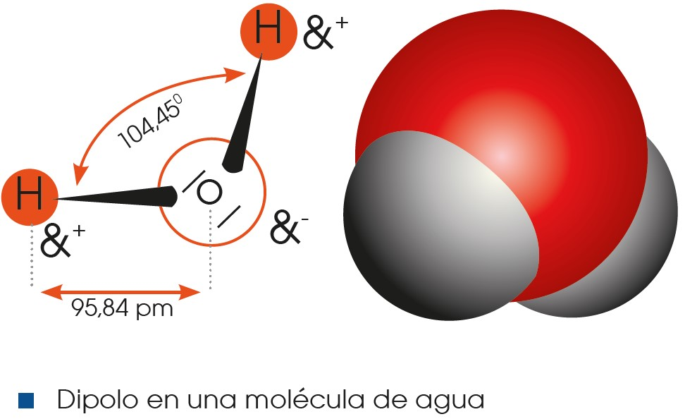
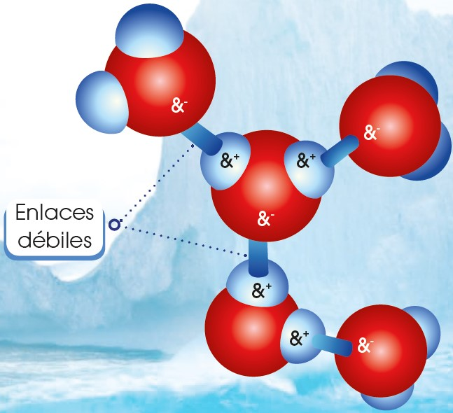
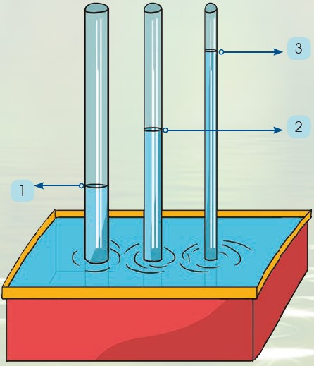
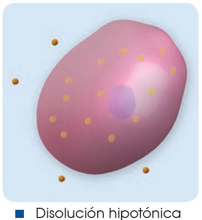
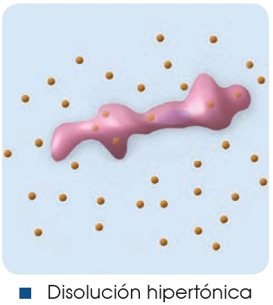
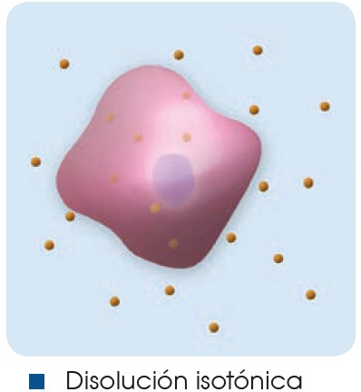
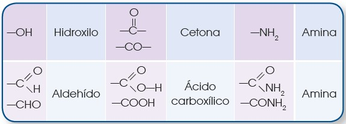
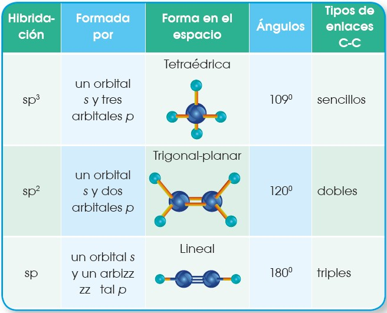

8 Agua
El agua es la sustancia más abundante en los seres vivos, ya que constituye alrededor del 70 % de su masa. Debido a su estructura molecular, presenta propiedades que la hacen imprescindible para el desarrollo de la vida.
8.1 Composición y estructura molecular
La molécula de agua (H2O) está formada por el enlace covalente entre un átomo de oxígeno y dos de hidrógeno, y se caracteriza por:
- Compartición de dos electrones: La compartición de electrones permite mantener una configuración estable.

- Polaridad de la molécula: El oxígeno es más electronegativo que el hidrógeno, por lo que atrae hacia su núcleo a los electrones del hidrógeno. Esto produce un reparto desigual de las cargas, por lo que la molécula de agua se convierte en un dipolo eléctrico en el que el oxígeno cuenta con carga negativa y los hidrógenos con carga positiva.

- Formación de puentes de hidrógeno: La atracción entre los átomos de hidrógeno y de oxígeno de diferentes moléculas de agua debido a su diferencia de carga forma un tipo de enlace débil que lo conocemos como puente de hidrógeno.

8.2 Propiedades fisicoquímicas del agua
Gracias a su composición y estructura molecular, el agua presenta unas propiedades fisicoquímicas que la convierten en una sustancia indispensable para la vida. A continuación, veremos las principales propiedades fisicoquímicas del agua y su utilidad para los seres vivos:
- Elevada tensión superficial
La fuerte cohesión entre las moléculas de agua, causada por los puentes de hidrógeno, provoca que el agua tenga una elevada tensión superficial. Esto se traduce en que las masas de agua, en su superficie, se comportan como una fina película elástica que puede soportar el peso de pequeñas partículas. Muchos insectos son capaces de aprovecharse de esta situación y viven caminando sobre el agua, ya que se desplazan sobre ella sin romper su tensión superficial.
- Capilaridad
Gracias a su tensión superficial y a la adhesión de las moléculas, el agua también presenta la propiedad de la capilaridad. Este fenómeno consiste en el ascenso del agua sin gasto energético a través de tubos estrechos. Cuanto menor sea el diámetro del tubo, más ascenderá el agua. Este proceso, que podemos comprobar viendo cómo se comporta el agua en un sorbete, es muy importante en los seres vivos, ya que ayuda a los sistemas circulatorios y es el fenómeno gracias al cual las plantas pueden absorber agua subterránea desde las raíces y transportarla hasta las hojas sin consumir energía.

- Elevado calor específico
La capacidad calorífica específica, es decir, la cantidad de calor necesaria para aumentar 1 °C la temperatura de un kilogramo de una sustancia, es muy elevada en el caso del agua, porque los numerosos puentes de hidrógeno que se establecen entre sus moléculas limitan el movimiento de estas y atrasan el incremento de la agitación térmica. El calor específico del agua es de 1 caloría/gramo · °C, o lo que es lo mismo: 4186 julios/ gramo · °C. Esto es más alto que el de cualquier otra sustancia similar al agua.
De este modo, cuando el agua se calienta, la temperatura asciende lentamente, porque no todo el calor se utiliza para aumentar el movimiento de las moléculas, sino que una parte se invierte en romper los puentes de hidrógeno. El descenso de 1 °C también se produce lentamente, en vista de que supone la pérdida de una importante cantidad de calor, la misma que se ha utilizado para producir este incremento.
Por este motivo, el agua desempeña un papel de vital importancia en la regulación de la temperatura de los seres vivos, porque es capaz de absorber y almacenar gran cantidad de calor aumentando muy poco su temperatura. Igualmente, esta propiedad hace que los océanos regulen la temperatura de la Tierra y mantengan un ambiente favorable para el desarrollo de la vida.
- Gran poder disolvente
Debido a la polaridad de las moléculas, el agua tiene la capacidad de disolver distintas sustancias ya sean iónicas o polares. Las sustancias iónicas, como la sal (cloruro de sodio), están formadas por iones, átomos cargados positiva o negativamente. Cloruro de sodio: NaCl -> Na++ Cl–. En contacto con el agua, los iones se separan y quedan rodeados por las moléculas de H2O, así se provoca la disolución de la sustancia iónica en agua.
Las sustancias polares son aquellas que tienen zonas con carga de distinto signo, pero no forman iones. Sustancias, como algunos glúcidos o proteínas, son polares y pueden disolverse en agua, ya que se establecen puentes de hidrógeno entre ellas y el agua y quedan rodeadas por moléculas de H2O.
Esta propiedad es muy importante para la vida, ya que moléculas grandes pueden disolverse y transportarse a través de los sistemas circulatorios de los seres vivos, disueltos en la sangre o en la savia de las plantas.
A las sustancias iónicas y polares que tienen afinidad con el agua y se pueden disolver en ella, las conocemos como hidrófilas; pero del mismo modo existen sustancias hidrófobas, sustancias apolares que repelen el agua como los lípidos.

- Densidad
El valor máximo de densidad del agua se obtiene a 4 °C, cuando se establecen numerosos puentes de hidrógeno entre sus moléculas. En este punto, consideramos la densidad del agua como 1 kg/dm3, o lo que es lo mismo, cada litro de agua tiene una masa de un kilogramo. A medida que aumentamos o disminuimos la temperatura del agua desde los 4 °C, su densidad disminuye. Esto es lo que permite que el hielo (agua a 0 °C) flote sobre el agua en estado líquido.
Este hecho será muy importante para la vida ya que, en épocas de frío, los lagos y lagunas quedarán congelados pero solo en su superficie, puesto que el agua congelada flota sobre el agua líquida y permite que en la profundidad siga existiendo vida.
- Bajo grado de ionización
Por lo general, solo una pequeña proporción de las moléculas de agua tienden a ionizarse, es decir, uno de los átomos de hidrógeno se separa para combinarse con otra molécula de agua y esto da lugar al ion hidronio (H3O+) y al ion hidroxilo (OH–).
Cuando una sustancia iónica o polar se disuelve en agua, se altera la cantidad de iones y eso provoca que se modifique el pH. La mayoría de los procesos biológicos dependen del pH y su variación puede alterar el correcto funcionamiento de los organismos.
Como el agua tiene un bajo grado de ionización, es necesario que en los seres vivos existan otros compuestos que actúan como tampón, es decir, mantienen el pH estable.
Aunque el agua no puede actuar como tampón, es importante que existan pequeñas cantidades de iones hidronio e hidroxilo, ya que estas son importantes para llevar a cabo algunas reacciones que ocurren en la célula.
El agua forma parte de diversas soluciones, entre las que destacan por su importancia biológica las soluciones tampón, porque mantienen constante el pH del medio intracelular y extracelular.
Las soluciones tampón están formadas por ácidos débiles o bases débiles, es decir, ácidos y bases que no se ionizan completamente cuando se disuelven en agua.
Cuando las soluciones tampón están formadas por ácidos débiles, estos pueden ionizarse y dar lugar a iones hidrógeno y a un ion aceptor de protones, es decir, una base. La reacción es reversible. HA H+ + A–
Cuando las soluciones tampón están formadas por bases débiles, como resultado de la ionización, se obtienen iones hidroxilo y un ion dador de protones, es decir, un ácido. La reacción también es reversible. BO B+ + OH–
8.3 Funciones biológicas del agua
El agua desempeña unas funciones biológicas decisivas en los procesos vitales. Estas funciones se relacionan con las propiedades anteriores.
| Funciones | Propiedades |
|---|---|
Distribuye sustancias. Algunas sustancias, como las sales minerales, circulan hacia las partes aéreas de las plantas y se distribuyen por ellas, gracias al desplazamiento del agua por los vasos conductores. |
La ascensión del agua por los vasos conductores es posible por capilaridad, es decir, por la combinación de la cohesión y la adhesión de las moléculas de agua. Debido a la atracción que ejercen las paredes del vaso conductor sobre las moléculas de agua, estas se adhieren a su superficie y avanzan en sentido ascendente. El resto de las moléculas que constituyen la columna de agua se mueve por cohesión. |
Modera la temperatura interna de los seres vivos. El contenido en agua de los seres vivos amortigua las variaciones de su temperatura interna como consecuencia de cambios bruscos de la temperatura ambiental, o por la producción de calor durante el metabolismo. Este efecto moderador favorece el desarrollo de las reacciones metabólicas. |
El agua necesita absorber mucho calor para aumentar 1 °C su temperatura. Del mismo modo, para que esta descienda 1 °C, se ha de desprender de una gran cantidad de calor. El lento ascenso o descenso de la temperatura del agua se debe a su elevada capacidad calorífica específica |
Permite la vida bajo la superficie helada de lagos y océanos. La capa de hielo que se forma en los lagos y los océanos durante el invierno no impide que, por debajo de ella, en el agua líquida, vivan numerosos organismos. El hielo actúa como aislante térmico y, como no se acumula en el fondo, no supone un obstáculo para el desarrollo de la vida. |
A temperaturas inferiores a los 4 °C, la densidad del agua disminuye en vez de aumentar. De esta manera, el hielo flota sobre el agua líquida. |
Actúa como disolvente. La disolución de sustancias en el citoplasma permite su transporte y su participación en las reacciones metabólicas. |
Las moléculas de agua tienden a separar numerosos compuestos por su elevada capacidad disolvente. Los enlaces de las sustancias se debilitan por la atracción que se establece entre cargas opuestas. |
Participa en diversas reacciones. En las células tienen lugar numerosas reacciones y en algunas de ellas el agua actúa como reactivo. En estas reacciones, denominadas reacciones de hidrólisis, se rompen enlaces de las moléculas por adición de H+ o OH–. |
Algunas moléculas de agua tienen tendencia a ionizarse, es decir, a separarse del oxígeno al que se unen covalentemente para unirse con otro átomo de oxígeno al que están unidas por puentes de hidrógeno. Los iones resultantes son atraídos por otros compuestos, de modo que rompen algunos enlaces existentes y forman nuevos. |
Sales minerales
Las sales minerales forman parte de los seres vivos y, aunque se encuentran en cantidades muy pequeñas en comparación con el agua o las biomoléculas, tienen funciones muy importantes en las reacciones metabólicas, en la regulación de estas o como constituyentes celulares.
Las sales más abundantes en los seres vivos son los cloruros, los fosfatos y los carbonatos de calcio, sodio, potasio y magnesio.
Características
Las sales minerales son sustancias formadas por un catión procedente de una base y un anión procedente de un ácido. Distinguimos dos tipos de sales minerales:
Insolubles: Se encuentran formando un precipitado que no se disocia. Por ejemplo, el fosfato cálcico, Ca3(PO4)2.
Solubles: Se encuentran disociadas en iones, como en el caso del cloruro sódico, NaCl.
Funciones
Las funciones de las sales minerales dependen de su solubilidad en el agua.
Las sales insolubles tienen función estructural, ya que, por ejemplo, los fosfatos y los carbonatos de calcio son componentes de huesos y conchas de los animales.
Las sales solubles se ionizan en sus iones correspondientes, los cuales tienen diversas funciones en las células. Por ejemplo, la transmisión del impulso nervioso depende del intercambio de iones Na+ y K+ entre el medio intracelular y el extracelular a través de la membrana plasmática.
Ósmosis
La presencia de sales disueltas en el agua condiciona el movimiento de las moléculas de agua a través de la membrana plasmática para igualar las concentraciones. Este movimiento es un caso especial de transporte pasivo y lo llamamos ósmosis. Así, las moléculas de agua atraviesan la membrana plasmática desde la disolución de menor concentración, disolución hipotónica, hacia la de mayor concentración, la disolución hipertónica. Cuando el paso del agua iguala las dos concentraciones, las disoluciones reciben el nombre de isotónicas.
Este movimiento del agua a través de la membrana plasmática puede producir que algunas células se arruguen por una pérdida excesiva de agua, que conocemos como plasmólisis, o bien que se inflen por un aumento también excesivo en el contenido celular de agua, fenómeno que llamamos turgencia. Para evitar estas dos situaciones, de consecuencias desastrosas para las células, estas poseen mecanismos para expulsar el agua o los iones mediante un transporte que requiere gasto de energía.
|  |  |  |
La difusión es el transporte de sustancias a través de la membrana que se da a favor del gradiente de concentración. No requiere de aporte energético, pero si las moléculas que atraviesan la membrana son de gran tamaño (ciertas proteínas, por ejemplo), es necesaria la participación de transportadores de membrana.
La diálisis es un caso de difusión selectiva a través de membrana, en el que solo la atraviesan moléculas pequeñas.
Biomoléculas orgánicas
Junto con el agua y las sales minerales, las biomoléculas orgánicas son los componentes fundamentales de la materia viva. Las biomoléculas orgánicas están formadas principalmente por carbono (C) y tienen funciones muy diversas en los seres vivos: estructurales, energéticas, de control en reacciones metabólicas, etc.
La vida, tal y como la conocemos, está basada en el carbono, y este es el único elemento que sirve como esqueleto de las biomoléculas que conforman a todos los organismos. La principal característica que hace que el carbono sea tan relevante es su configuración electrónica que permite que forme cuatro enlaces covalentes simples muy estables, e igualmente podría crear enlaces dobles e incluso triples. De esta forma, los átomos de carbono pueden crear cadenas lineales, ramificadas o cíclicas muy estables sobre las que se van situando otros grupos funcionales, formados en su mayoría por hidrógeno (H), oxígeno (O) y nitrógeno (N).


Lo que permite que el carbono pueda formar los cuatro enlaces tan estables, es que sus cuatro electrones de valencia se disponen en una configuración electrónica especial que da lugar al carbono excitado (C+).
Configuración electrónica del carbono en su estado normal: C: 1s2, 2s2, 2p2. Configuración electrónica del carbono excitado: C*: 1s2, 2s1, 2px1py1pz1.
Gracias a esta configuración, los orbitales del carbono hibridan y pueden formar los distintos enlaces.